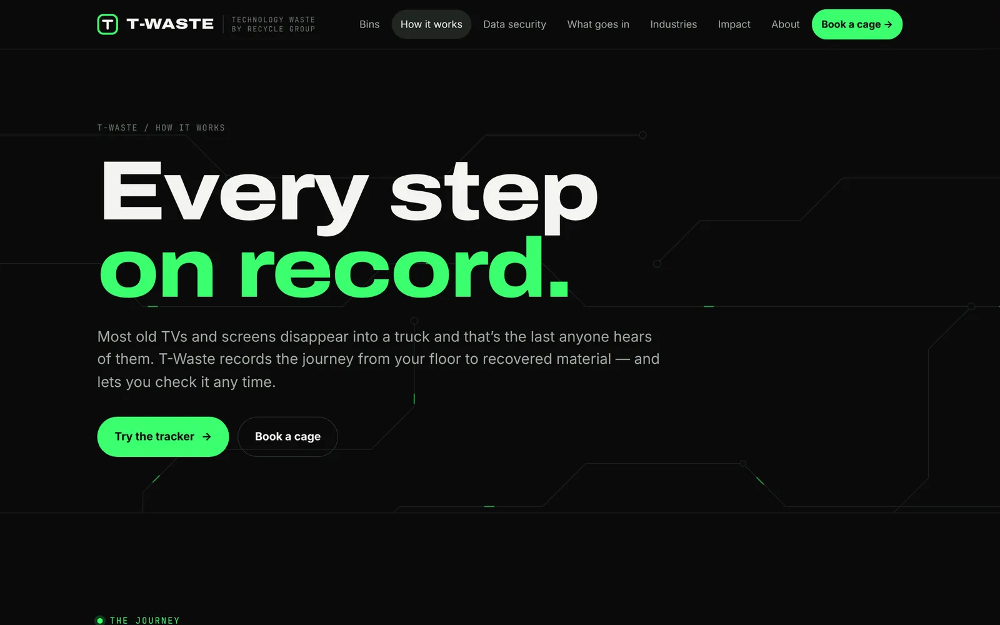
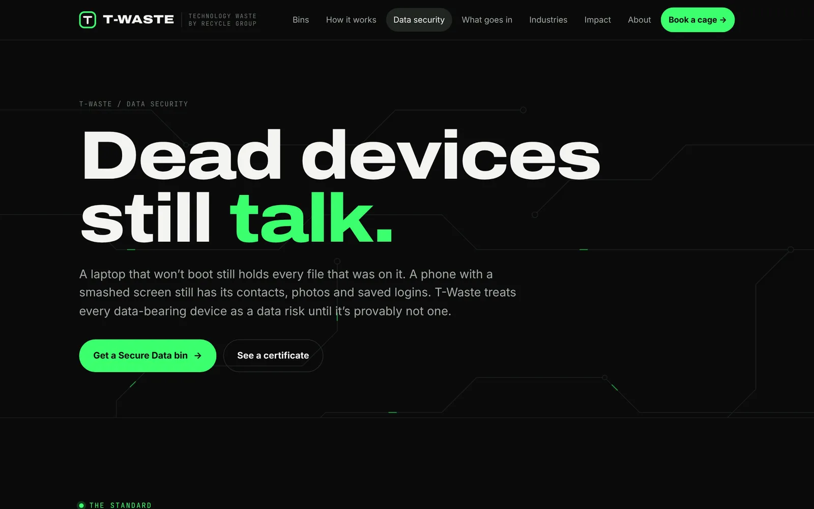
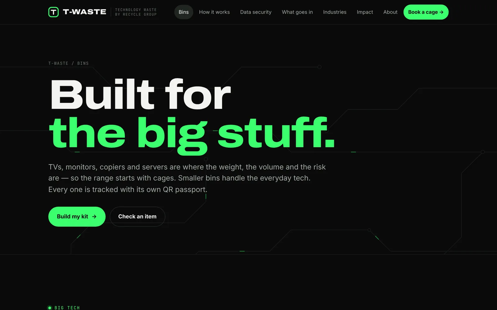
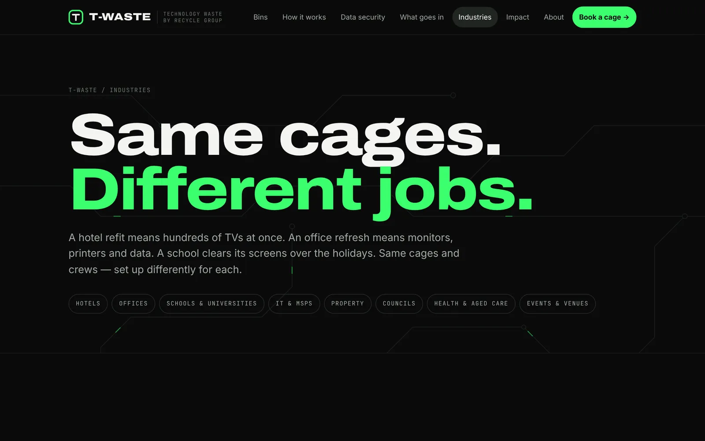
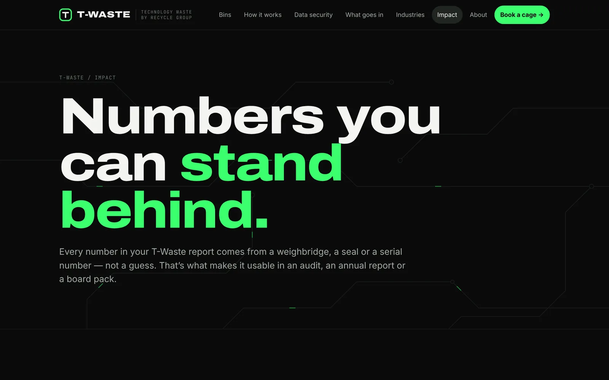
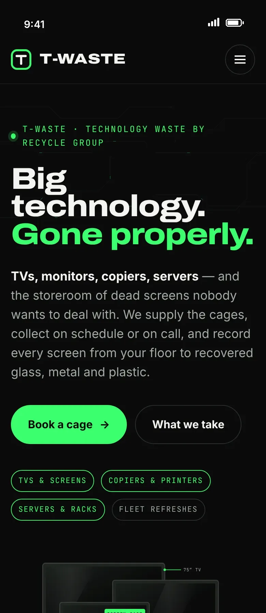
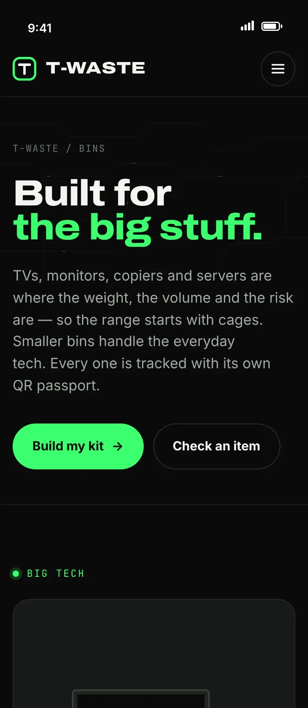
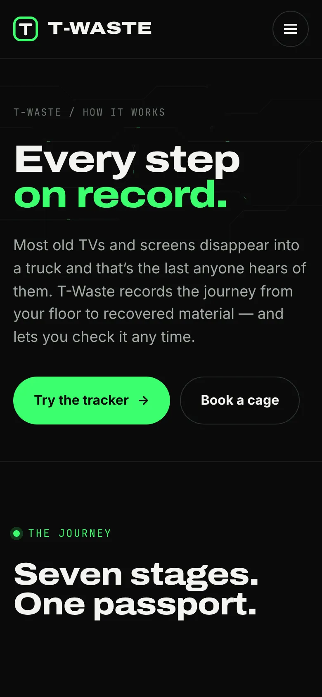

01
Take a TV apart
An interactive teardown: tap a part of the screen to see what it’s made of and where it goes. It turns compliance into something people want to click.

Big technology waste, gone properly: a launch site for a service that takes TVs, monitors, copiers and servers.

Every office refit leaves a room full of dead screens nobody knows how to get rid of. They can’t go in the skip, they’re heavy, and plenty still hold data.
Launch a brand and a site, fast, that makes a dull and risky problem feel completely handled.
An interactive teardown: tap a part of the screen to see what it’s made of and where it goes. It turns compliance into something people want to click.
Every cage gets its own record, from loaded and sealed to dismantled to certificate issued. One idea that sells traceability.

Data-bearing devices are logged and destroyed on record, with the process written out for whoever has to sign it off.

Cages for screens, IT and bulk clear-outs, smaller bins for the everyday stuff, and one obvious call to action: book a cage.







Brand, copy and a nine-page site went from brief to live preview in two days.
Hand-built HTML, CSS and JavaScript. Hosted on GitHub Pages.

Tell us what’s slowing your business down. We’ll audit your website and ads for free and show you what we’d build instead of another subscription.
Get a free audit